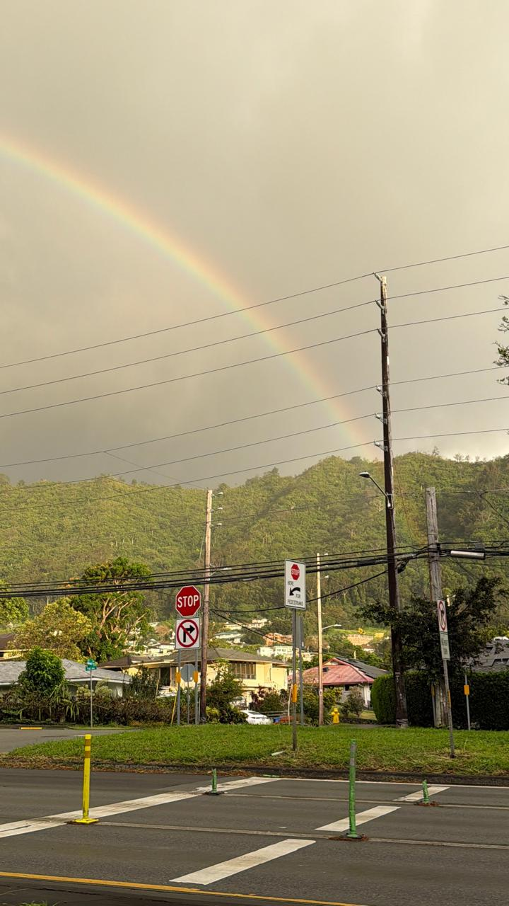
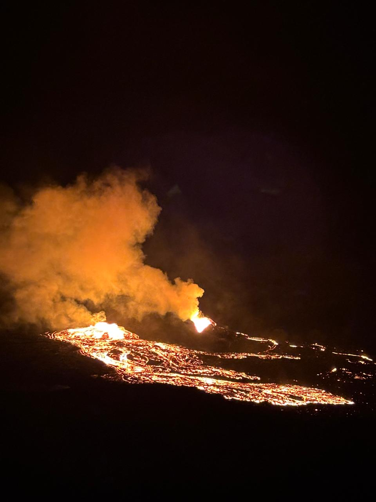

El paraíso
Tuve la oportunidad de irme de work and travel al sueño de muchas personas: Hawái. Durante 3 meses tuve la grata experiencia de disfrutar de la isla y sus maravillosas experiencias como nadar con tiburones o tirarme de paracaídas. También conocí a un gran grupo de personas con las que tuve la suerte de vivir toda esa experiencia.

El volcán
Una de las grandes atracciones de la isla son la cantidad de volcanes que hay. Son volcanes que están activos y se pueden visitar. Tuve la suerte de visitar uno que logró un récord de erupción.
